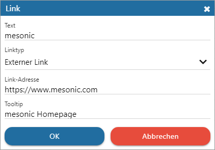
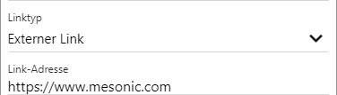
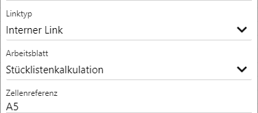
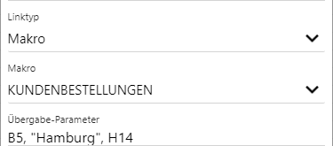

Ø  Link
Link
Mit Hilfe eines Links kann eine Verknüpfungsfunktion zu einer Zelle hinterlegt werden. Die Art des Links ist hierbei in den Einstellungen zu definieren.
Hinweis
Bei dem Verschieben von Zellen werden nur der Text des Links verschoben. Der Link als solches bleibt auf der Ausgangszelle bestehen.
Eigenschaftsfenster "Link"

Folgende Einstellungen und Parameter können hinterlegt werden:
Ø Text
In dem Eingabefeld "Text" kann der Text der Zelle hinterlegt werden. Sollte keine Eingabe erfolgen, wird automatisch das Ziel des Links übernommen.
Ø Linktyp
An dieser Stelle kann mit Hilfe einer Auswahlliste der Typ des Links definiert werden. Folgende Typen stehen zur Auswahl:
ü Externer Link
Durch Anwahl der
Zelle wird eine Internetseite im Standardbrowser aufgerufen werden. Die hierfür
notwendige Internet-Adresse muss hierfür im Eingabefeld "Link-Adresse"
hinterlegt werden.
Hinweis
Die Link-Adresse muss mit "www", "http://" oder "https://" beginne.
Beispiel

ü Interner Link
Durch Anwahl der
Zelle wird der Fokus auf eine bestimmt Zelle gelegt. Die hierfür notwendigen
Angaben müssen in den folgenden Eingabefeldern "Arbeitsblatt" und
"Zellenreferenz" hinterlegt werden.
Beispiel

ü Makro
Mit diesen Link kann bei
Anwahl der Zelle ein WinLine-Programm-Makro starten. Hierfür muss zunächst aus
der Auswahlliste "Makro" das entsprechende Makro gewählt werden.
Falls im
Makro mit einem oder mehreren Parametern gearbeitet wird (MParameter-Funktion),
so können im Eingabefeld "Übergabe-Parameter" jene Zellen bzw. statische
Informationen hinterlegt werden, welche als Parameter verwendet werden soll.
Hierbei gilt es folgende Punkte zu beachten:
ü Mehrere Parameter müssen durch "," (Komma) getrennt werden
ü Statisch Informationen sind immer in " (Hochkommata) einzufassen (z.B. "guter Kunde")
ü Die hinterlegten Parameter werden entsprechend ihrer Reihenfolge an die MParameter-Funktion übergeben (erste Hinterlegung entspricht Parameter 20, zweite 21, etc.)
Beispiel

Ø Tooltip
In dem Eingabefeld "Tooltip" kann ein optionaler Beschreibungstext für den Link hinterlegt werden. Dieser wird bei einem Mouseover automatisch angezeigt.
Buttons
Ø Ok
Durch Anwahl des Buttons "Ok" werden die Eingaben gespeichert.
Ø Abbrechen
Durch Anwahl des Buttons "Abbrechen" bzw. der Taste ESC wird das Fenster geschlossen und alle nicht gespeicherten Eingaben verworfen.